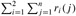

|
|
< Day Day Up > |
|
Our first example of dynamic programming solves a manufacturing problem. The Colonel Motors Corporation produces automobiles in a factory that has two assembly lines, shown in Figure 15.1. An automobile chassis enters each assembly line, has parts added to it at a number of stations, and a finished auto exits at the end of the line. Each assembly line has n stations, numbered j = 1, 2, ..., n. We denote the jth station on line i (where i is 1 or 2) by Si,j. The jth station on line 1 (S1,j) performs the same function as the jth station on line 2 (S2,j). The stations were built at different times and with different technologies, however, so that the time required at each station varies, even between stations at the same position on the two different lines. We denote the assembly time required at station Si,j by ai,j. As Figure 15.1 shows, a chassis enters station 1 of one of the assembly lines, and it progresses from each station to the next. There is also an entry time ei for the chassis to enter assembly line i and an exit time xi for the completed auto to exit assembly line i.
Normally, once a chassis enters an assembly line, it passes through that line only. The time to go from one station to the next within the same assembly line is negligible. Occasionally a special rush order comes in, and the customer wants the automobile to be manufactured as quickly as possible. For rush orders, the chassis still passes through the n stations in order, but the factory manager may switch the partially-completed auto from one assembly line to the other after any station. The time to transfer a chassis away from assembly line i after having gone through station Si,j is ti,j, where i = 1, 2 and j = 1, 2, ..., n - 1 (since after the nth station, assembly is complete). The problem is to determine which stations to choose from line 1 and which to choose from line 2 in order to minimize the total time through the factory for one auto. In the example of Figure 15.2(a), the fastest total time comes from choosing stations 1, 3, and 6 from line 1 and stations 2, 4, and 5 from line 2.
The obvious, "brute force" way of minimizing the time through the factory is infeasible when there are many stations. If we are given a list of which stations to use in line 1 and which to use in line 2, it is easy to compute in Θ(n) time how long it takes a chassis to pass through the factory. Unfortunately, there are 2n possible ways to choose stations, which we see by viewing the set of stations used in line 1 as a subset of {1, 2, ..., n} and noting that there are 2n such subsets. Thus, determining the fastest way through the factory by enumerating all possible ways and computing how long each takes would require Ω(2n) time, which is infeasible when n is large.
The first step of the dynamic-programming paradigm is to characterize the structure of an optimal solution. For the assembly-line scheduling problem, we can perform this step as follows. Let us consider the fastest possible way for a chassis to get from the starting point through station S1,j. If j = 1, there is only one way that the chassis could have gone, and so it is easy to determine how long it takes to get through station S1,j. For j = 2, 3, ..., n, however, there are two choices: the chassis could have come from station S1,j-1 and then directly to station S1,j, the time for going from station j - 1 to station j on the same line being negligible. Alternatively, the chassis could have come from station S2,j-1 and then been transferred to station S1,j, the transfer time being t2,j-1. We shall consider these two possibilities separately, though we will see that they have much in common.
First, let us suppose that the fastest way through station S1,j is through station S1,j-1. The key observation is that the chassis must have taken a fastest way from the starting point through station S1,j-1. Why? If there were a faster way to get through station S1,j-1, we could substitute this faster way to yield a faster way through station S1,j: a contradiction.
Similarly, let us now suppose that the fastest way through station S1,j is through station S2,j-1. Now we observe that the chassis must have taken a fastest way from the starting point through station S2,j-1. The reasoning is the same: if there were a faster way to get through station S2,j-1, we could substitute this faster way to yield a faster way through station S1,j, which would be a contradiction.
Put more generally, we can say that for assembly-line scheduling, an optimal solution to a problem (finding the fastest way through station Si,j) contains within it an optimal solution to subproblems (finding the fastest way through either S1,j-1 or S2,j-1). We refer to this property as optimal substructure, and it is one of the hallmarks of the applicability of dynamic programming, as we shall see in Section 15.3.
We use optimal substructure to show that we can construct an optimal solution to a problem from optimal solutions to subproblems. For assembly-line scheduling, we reason as follows. If we look at a fastest way through station S1,j, it must go through station j - 1 on either line 1 or line 2. Thus, the fastest way through station S1,j is either
the fastest way through station S1,j-1 and then directly through station S1,j, or
the fastest way through station S2,j-1, a transfer from line 2 to line 1, and then through station S1,j.
Using symmetric reasoning, the fastest way through station S2,j is either
the fastest way through station S2,j-1 and then directly through station S2,j, or
the fastest way through station S1,j-1, a transfer from line 1 to line 2, and then through station S2,j.
To solve the problem of finding the fastest way through station j of either line, we solve the subproblems of finding the fastest ways through station j - 1 on both lines.
Thus, we can build an optimal solution to an instance of the assembly-line scheduling problem by building on optimal solutions to subproblems.
The second step of the dynamic-programming paradigm is to define the value of an optimal solution recursively in terms of the optimal solutions to subproblems. For the assembly-line scheduling problem, we pick as our subproblems the problems of finding the fastest way through station j on both lines, for j = 1, 2, ..., n. Let fi[j] denote the fastest possible time to get a chassis from the starting point through station Si,j.
Our ultimate goal is to determine the fastest time to get a chassis all the way through the factory, which we denote by f*. The chassis has to get all the way through station n on either line 1 or line 2 and then to the factory exit. Since the faster of these ways is the fastest way through the entire factory, we have
It is also easy to reason about f1[1] and f2[1]. To get through station 1 on either line, a chassis just goes directly to that station. Thus,
Now let us consider how to compute fi[j] for j = 2, 3, ..., n (and i = 1, 2). Focusing on f1[j], we recall that the fastest way through station S1,j is either the fastest way through station S1,j-1 and then directly through station S1,j, or the fastest way through station S2,j-1, a transfer from line 2 to line 1, and then through station S1,j. In the first case, we have f1[j] = f1[j - 1] + a1,j, and in the latter case, f1[j] = f2[j - 1] + t2,j-1 + a1,j. Thus,
for j = 2, 3, ..., n. Symmetrically, we have
for j = 2, 3, ..., n. Combining equations (15.2)-(15.5), we obtain the recursive equations
Figure 15.2(b) shows the fi[j] values for the example of part (a), as computed by equations (15.6) and (15.7), along with the value of f*.
The fi[j] values give the values of optimal solutions to subproblems. To help us keep track of how to construct an optimal solution, let us define li [j] to be the line number, 1 or 2, whose station j - 1 is used in a fastest way through station Si,j . Here, i = 1, 2 and j = 2, 3, ..., n. (We avoid defining li[1] because no station precedes station 1 on either line.) We also define l* to be the line whose station n is used in a fastest way through the entire factory. The li[j] values help us trace a fastest way. Using the values of l* and li[j] shown in Figure 15.2(b), we would trace a fastest way through the factory shown in part (a) as follows. Starting with l* = 1, we use station S1,6. Now we look at l1[6], which is 2, and so we use station S2,5. Continuing, we look at l2[5] = 2 (use station S2,4), l2[4] = 1 (station S1,3), l1[3] = 2 (station S2,2), and l2[2] = 1 (station S1,1).
At this point, it would be a simple matter to write a recursive algorithm based on equation (15.1) and the recurrences (15.6) and (15.7) to compute the fastest way through the factory. There is a problem with such a recursive algorithm: its running time is exponential in n. To see why, let ri(j) be the number of references made to fi[j] in a recursive algorithm. From equation (15.1), we have
From the recurrences (15.6) and (15.7), we have
for j = 1, 2, ..., n - 1. As Exercise 15.1-2 asks you to show, ri(j) = 2n-j. Thus, f1[1] alone is referenced 2n-1 times! As Exercise 15.1-3 asks you to show, the total number of references to all fi[j] values is Θ(2n).
We can do much better if we compute the fi[j] values in a different order from the recursive way. Observe that for j ≥ 2, each value of fi[j] depends only on the values of f1[j - 1] and f2[j - 1]. By computing the fi[j] values in order of increasing station numbers j-left to right in Figure 15.2(b)-we can compute the fastest way through the factory, and the time it takes, in Θ(n) time. The FASTEST-WAY procedure takes as input the values ai,j, ti,j, ei, and xi , as well as n, the number of stations in each assembly line.
FASTEST-WAY(a, t, e, x, n) 1 f1[1] ← e1 + a1,1 2 f2[1] ←e2 + a2,1 3 for j ← 2 to n 4 do if f1[j - 1] + a1,j ≤ f2[j - 1] + t2,j-1 + a1,j 5 then f1[j] ← f1[j - 1] + a1, j 6 l1[j] ← 1 7 else f1[j] ← f2[j - 1] + t2,j-1 + a1,j 8 l1[j] ← 2 9 if f2[j - 1] + a2,j ≤ f1[j - 1] + t1,j-1 + a2,j 10 then f2[j] ← f2[j - 1] + a2,j 11 l2[j] ← 2 12 else f2[j] ∞ f1[j - 1] + t1,j-1 + a2,j 13 l2[j] ← 1 14 if f1[n] + x1 ≤ f2[n] + x2 15 then f* = f1[n] + x1 16 l* = 1 17 else f* = f2[n] + x2 18 l* = 2
FASTEST-WAY works as follows. Lines 1-2 compute f1[1] and f2[1] using equations (15.2) and (15.3). Then the for loop of lines 3-13 computes fi[j] and li[j] for i = 1, 2 and j = 2, 3, ..., n. Lines 4-8 compute f1[j] and l1[j] using equation (15.4), and lines 9-13 compute f2[j] and l2[j] using equation (15.5). Finally, lines 14-18 compute f* and l* using equation (15.1). Because lines 1-2 and 14-18 take constant time and each of the n - 1 iterations of the for loop of lines 3-13 takes constant time, the entire procedure takes Θ(n) time.
One way to view the process of computing the values of fi[j] and li [j] is that we are filling in table entries. Referring to Figure 15.2(b), we fill tables containing values fi[j] and li[j] from left to right (and top to bottom within each column). To fill in an entry fi[j], we need the values of f1[j - 1] and f2[j - 1] and, knowing that we have already computed and stored them, we determine these values simply by looking them up in the table.
Having computed the values of fi[j], f*, li[j], and l*, we need to construct the sequence of stations used in the fastest way through the factory. We discussed above how to do so in the example of Figure 15.2.
The following procedure prints out the stations used, in decreasing order of station number. Exercise 15.1-1 asks you to modify it to print them in increasing order of station number.
PRINT-STATIONS(l, n) 1 i ← l* 2 print "line " i ", station " n 3 for j ← n downto 2 4 do i ← li[j] 5 print "line " i ", station " j - 1
In the example of Figure 15.2, PRINT-STATIONS would produce the output
line 1, station 6
line 2, station 5
line 2, station 4
line 1, station 3
line 2, station 2
line 1, station 1
Show how to modify the PRINT-STATIONS procedure to print out the stations in increasing order of station number. (Hint: Use recursion.)
Use equations (15.8) and (15.9) and the substitution method to show that ri(j), the number of references made to fi[j] in a recursive algorithm, equals 2n - j.
Using the result of Exercise 15.1-2, show that the total number of references to all fi[j] values, or , is exactly 2n+1 - 2.
|
|
< Day Day Up > |
|